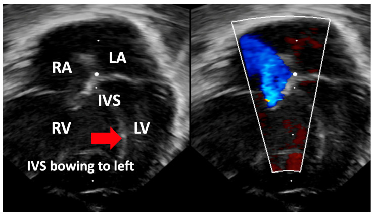
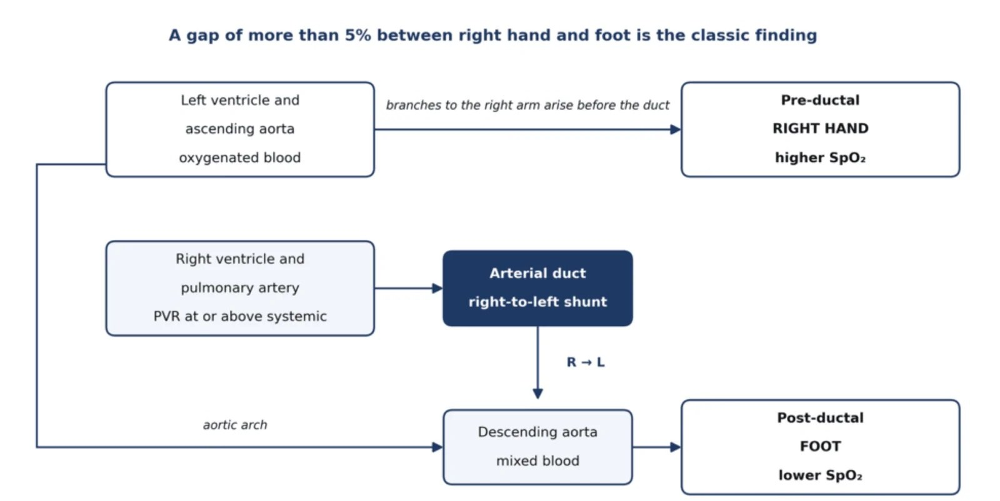
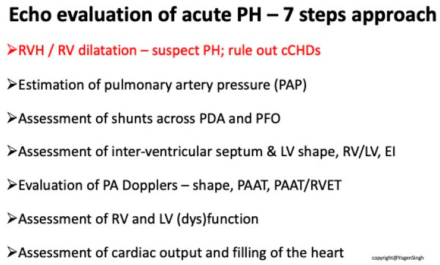
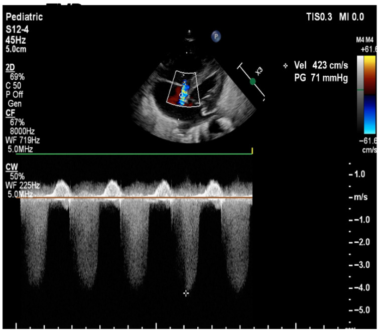
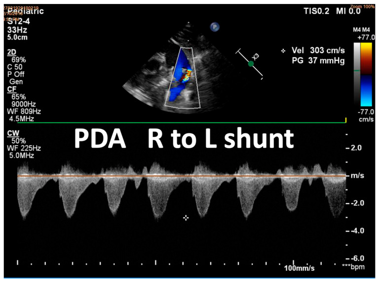
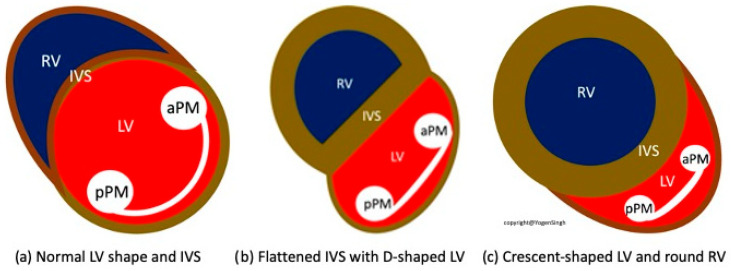

607 — Tăng áp lực động mạch phổi dai dẳng ở sơ sinh (PPHN): siêu âm tim tại giường, iNO & ngưỡng ECMO
Tags: pattern:tang-ap-dong-mach-phoi pattern:shunt-phai-trai pattern:ha-oxy-khang-tri vung:phoi-nhi vung:tim score:OI protocol:sieu-am-tim-so-sinh protocol:iNO
Mức chắc chắn (certainty): tổng hợp y văn (literature synthesis) — ghép một tổng quan thực hành cho đơn vị sơ sinh cấp 2 (Cureus 2026, PMC13652105), một tổng quan có hình siêu âm minh họa đầy đủ (Biomedicines 2025, PMC12561312) và một bài về phenotype/thời điểm (J Perinatol 2026, PMC13680266). Số liệu lấy từ bảng/chú thích bài gốc; các ngưỡng khác nhau giữa guideline được ghi rõ nguồn, không gộp thành một con số duy nhất.
1. Tổng quan bệnh học – cơ chế hình ảnh
Định nghĩa sinh lý: PPHN là thất bại giảm sức cản mạch phổi (PVR) sau sinh → áp lực động mạch phổi bằng hoặc vượt áp lực hệ thống → máu shunt phải–trái qua ống động mạch (PDA) và/hoặc lỗ bầu dục (PFO) → hạ oxy không tương xứng với bệnh nhu mô phổi. Vì vậy PPHN là hội chứng sinh lý, không phải một chẩn đoán nguyên nhân.
Phương trình phải thuộc: PAP trung bình = (PVR × lưu lượng máu phổi) + PCWP. Ba nhánh sinh lý tương ứng ba phenotype: (1) PVR tăng, nhu mô phổi bình thường (thể điển hình — maladaptation); (2) PVR tăng + nhu mô phổi bất thường (CDH, loạn sản phổi, thiểu sản phổi); (3) lưu lượng/áp lực tĩnh mạch phổi tăng (hẹp tĩnh mạch phổi, rối loạn chức năng thất trái — nhóm 2 WSPH).
TẠI SAO hạ oxy "không đáp ứng oxy": oxy là giãn mạch phổi mạnh, nhưng khi máu đã đi tắt qua ống động mạch/lỗ bầu dục thì oxy thêm không đi qua phổi → không sửa được shunt. Đây là điểm khác biệt cốt lõi với bệnh nhu mô (RDS, viêm phổi) nơi tăng FiO₂ vẫn cải thiện PaO₂.
TẠI SAO chênh SpO₂ tay phải – chân: nhánh động mạch cấp máu tay phải nằm TRƯỚC ống động mạch (pre-ductal), còn động mạch chủ xuống sau ống (post-ductal). Khi có shunt phải–trái qua PDA, máu đã khử oxy đổ vào động mạch chủ xuống → SpO₂ chân thấp hơn tay phải.
TẠI SAO siêu âm tim thấy được áp lực phổi (vật lý):
- Dòng hở ba lá (TR): chênh áp RV–RA tính theo Bernoulli rút gọn ΔP = 4 × Vmax²; PASP = 4 × (TR Vmax)² + áp lực nhĩ phải (ước 3–10 mmHg). Vận tốc TR càng cao = chênh áp càng lớn. TR chỉ có ở 60–85% ca PPHN — không có TR không loại trừ PPHN.
- Vách liên thất (IVS): vách là màng mềm giữa hai buồng; vị trí vách do chênh áp RV–LV quyết định, không do cơ tim dày. Khi áp phổi 50–100% áp hệ thống → vách dẹt, thất trái hình chữ D; khi áp phổi > áp hệ thống → thất trái hình lưỡi liềm, thất phải tròn.
- Shunt qua PDA/PFO: hướng dòng = hướng chênh áp; phải–trái = áp phổi > áp chủ, hai chiều = hai áp lực gần bằng nhau (PPHN trung bình), trái–phải = áp phổi thấp hơn.
- PAAT (pulmonary arterial acceleration time): khi PVR/compliance mạch phổi bất thường, thời gian tăng tốc dòng phổi ngắn lại và PAAT/RVET giảm. Ngưỡng số cụ thể khác nhau giữa các nghiên cứu — chưa có ngưỡng chuẩn thống nhất; dùng để theo dõi xu hướng, không để chẩn đoán đơn độc.

Hình: RV giãn và vách liên thất đẩy sang trái — dấu hiệu áp lực thất phải ≥ thất trái. Nguồn: Chojnacka K et al., Biomedicines 2025, PMC12561312 Fig. 2, CC BY 4.0.
Ngưỡng định lượng bắt buộc nhớ:
- Chỉ số oxy hóa OI = (MAP × FiO₂ × 100) / PaO₂; OI < 10 nhẹ**, **10–25 trung bình**, **> 25 nặng; iNO khi OI > 25 (guideline quốc tế) hoặc > 15–20 (một số mạng lưới UK); ECMO khi OI > 40 kéo dài > 4 giờ (ELSO 2017), liên hệ trung tâm ECMO khi OI > 25–30.
- Chênh SpO₂ pre–post ductal > 5% là dấu hiệu kinh điển; chênh 5–10% ủng hộ shunt phải–trái qua PDA nhưng không đủ chẩn đoán; một guideline dùng ngưỡng > 4% kèm FiO₂ > 50% hoặc PaO₂ < 8 kPa** và suy hô hấp ở thai **> 35 tuần.
- iNO: khởi đầu 20 ppm, đáp ứng = PaO₂ tăng ≥ 20 mmHg trong 30 phút; half-life 2–6 giây; có thể thử 40–80 ppm nếu không đáp ứng; trẻ non tháng khởi đầu 5–10 ppm.
- BNP > 850 pg/mL dự báo cần iNO (độ nhạy cao; ngưỡng chưa chuẩn hóa).
- Tỷ lệ: PPHN gặp 0,1–0,6% trẻ sơ sinh; ~40% (một mạng lưới UK) hoặc ~1/3 (tổng quan 2026) không đáp ứng iNO; NNT = 5 để tránh một ca ECMO.
- Thời điểm: PPHN điển hình (maladaptation) hết bệnh trong 10 ngày đầu; < 1/3 ca PPHN không điển hình (loạn sản phổi) đạt mốc cai máy/thuốc trong 10 ngày → nghĩ DevLD (ACD, TBX4, đột biến surfactant).
2. Mẫu hình + chẩn đoán phân biệt theo vị trí (gamut)

Hình: cơ chế chênh SpO₂ — tay phải nhận máu trước ống, chân nhận máu sau ống đã trộn máu khử oxy. Nguồn: Mohamed E et al., Cureus 2026, PMC13652105 Fig. 1, CC BY 4.0.- Mẫu hình 1 — hạ oxy + chênh pre/post ductal + phổi "tương đối sạch": thể maladaptation (vô căn, sau ngạt, nhiễm trùng, mẹ dùng NSAID/SSRI). Đây là PPHN "kinh điển".
- Mẫu hình 2 — hạ oxy + phổi bất thường trên X-quang: MAS (đám thô + ứ khí), RDS (hạt kính mờ), viêm phổi/sepssis, thiểu sản phổi, CDH (quai ruột trong lồng ngực, trung thất lệch). PPHN có thể đồng thời với bệnh nhu mô — không loại trừ nhau.
- Mẫu hình 3 — sốc/tưới máu kém + tím: bệnh tim bẩm sinh tím (TAPVC, TGA, teo phổi, Fallot nặng, teo ba lá, Ebstein, hẹp van ĐMC/gián đoạn cung chủ, HLHS). Bắt buộc loại trừ trước khi kết luận PPHN.
- Mẫu hình 4 — PPHN "không hết" sau 10 ngày: loạn sản phổi (DevLD) — ACD (FOXF1), TBX4, đột biến ABCA3/SFTPB/SFTPC/NKX2-1, Trisomy 21; cần gen + CT phổi + cân nhắc sinh thiết.
- Mẫu hình 5 — PPHN do tim trái (nhóm 2): FGR, con mẹ đái tháo đường, HIE, non tháng, hẹp đường ra thất trái → áp lực đổ đầy thất trái cao, phù phổi; điều trị khác (lusitropy/milrinone, giảm thể tích), không chỉ giãn mạch phổi.
- Phân bố theo bệnh nền (dịch tễ): MAS, ngạt chu sinh, nhiễm khuẩn (đặc biệt GBS), viêm phổi, thiểu sản phổi/ối ít, vỡ ối kéo dài; đa hồng cầu và hạ calci có thể góp phần; mẹ dùng aspirin, NSAID, SSRI là yếu tố liên quan.
3. Bảng so sánh phân biệt (ma trận đối chiếu)
| Thực thể (entity) | Hình ảnh / lâm sàng điển hình | Chốt vào (rule-in) | Chốt loại (rule-out) | Gợi ý xác nhận |
|---|---|---|---|---|
| PPHN thể maladaptation (điển hình) | Trẻ đủ tháng/gần đủ tháng, hạ oxy kháng oxy, chênh SpO₂ > 5%, X-quang phổi sạch hoặc bệnh nhu mô nhẹ; echo: vách dẹt, TR, shunt phải–trái | PVR cao + shunt phải–trái + loại trừ tim bẩm sinh + hết bệnh trong ~10 ngày | Hết shunt sau 10 ngày, không đáp ứng giãn mạch → nghĩ loạn sản/tim trái | Echo tại giường; đáp ứng iNO |
| PPHN + bệnh nhu mô (MAS/RDS/viêm phổi) | X-quang đám thô, hạt kính mờ, đông đặc; PaO₂ thấp đồng đều hai vị trí (không chênh) | Tổn thương nhu mô + giảm compliance; chênh SpO₂ có thể KHÔNG có | Phổi hoàn toàn sạch, chênh rõ → thể mạch máu thuần | X-quang; siêu âm phổi; đáp ứng surfactant |
| CDH | Quai ruột trong lồng ngực, trung thất lệch, thiểu sản phổi cùng bên | Quai ruột + lệch trung thất + thiểu sản phổi | Lồng ngực bình thường, không lệch trung thất | X-quang; echo (đánh giá PH) |
| TAPVC (hội chứng tim trái giả) | Tím + phù phổi/ tĩnh mạch phổi giãn, không đáp ứng oxy; X-quang có thể phù phổi | Echo không thấy tĩnh mạch phổi đổ về nhĩ trái | Tĩnh mạch phổi đổ về nhĩ trái bình thường | Echo + Doppler màu bắt buộc; chuyển tim mạch nhi |
| TGA / teo phổi / Fallot nặng | Tím sớm, không chênh SpO₂ rõ, echo bất thường cấu trúc | Bất thường cấu trúc trên echo | Cấu trúc tim bình thường | Echo; PGE1 5–10 ng/kg/phút khi nghi tổn thương phụ thuộc ống |
| PPHN do tim trái (nhóm 2) | FGR/IDM/HIE, phù phổi, thất trái giãn/yếu, hở van hai lá | Rối loạn chức năng thất trái + áp lực đổ đầy cao | Thất trái bình thường, không phù phổi | Echo (chức năng LV, PCWP ước tính) |
| PPHN do loạn sản phổi (DevLD) | Không cai được máy sau 10 ngày, PH nặng kéo dài, có thể tràn khí tái diễn, bất thường gen | PH kéo dài > 10 ngày + hình ảnh/gen loạn sản | Cai oxy/thuốc trong tuần đầu | CT phổi độ phân giải cao; panel gen; sinh thiết chọn lọc |
| Nhiễm khuẩn huyết/viêm phổi | Sốt/mẹ sốt, CRP tăng, sốc, giảm tưới máu | Cấy máu dương + đáp ứng kháng sinh/vận mạch | Cấy âm, không ổ nhiễm | Cấy máu, CRP, X-quang |
4. Protocol chụp/đánh giá + phân tầng điều trị
4.1 Đánh giá tại giường (7 bước siêu âm tim)
- Hình thái & loại trừ tim bẩm sinh (đặc biệt TAPVC, TGA, teo phổi, hẹp đường ra trái).
- Ước lượng áp lực động mạch phổi qua TR Vmax (PASP = 4 × Vmax² + RAP).
- Shunt qua PDA và PFO (hướng, hai chiều, phải–trái).
- Vách liên thất & hình dạng thất trái (O / D / lưỡi liềm) ± chỉ số lệch tâm (EI).
- Doppler động mạch phổi: hình dạng sóng, PAAT, PAAT/RVET.
- Chức năng RV và LV (TAPSE, FAC, Tei).
- Cung lượng tim và đổ đầy (IVC, đánh giá đáp ứng điều trị lặp lại).

Hình: 7 bước có thứ tự — bắt đầu bằng loại trừ tim bẩm sinh, kết thúc bằng cung lượng tim. Nguồn: Chojnacka K et al., Biomedicines 2025, PMC12561312 Chart 1, CC BY 4.0.- Theo dõi: SpO₂ trước và sau ống liên tục, khí máu ghi rõ vị trí lấy mẫu (OI tính từ mẫu sau ống mới dùng cho tiêu chuẩn ECMO), OI lặp lại theo xu hướng (không dùng một giá trị đơn), lactate, huyết áp xâm lấn, X-quang ngực.
- Mục tiêu: SpO₂ trước ống 93–97% với PaO₂ 55–80 mmHg (một tổng quan) hoặc 95–98% với **chênh < 5%** (một mạng lưới UK) — **hai đích khác nhau, ghi rõ nguồn**; **tránh tăng oxy** (FiO₂ > 0,6 không hiệu quả khi shunt ngoài phổi và làm nặng tổn thương phổi). PaCO₂ 4,5–5,5 kPa, pH 7,35–7,45, không tăng thông khí.
- Thông khí: đặt nội khí quản khi cần FiO₂ > 45–50% trên hỗ trợ không xâm lấn; mở phổi đến 8–9 xương sườn sau trên X-quang — tối ưu thể tích, không tối đa (xẹp làm tăng PVR trong vài phút, nhưng căng giãn cũng tăng PVR). Surfactant nếu có RDS (đồng thuận châu Âu 2022).
- An thần/giảm đau: giảm kích thích (tiếng ồn, thao tác); morphine truyền 5–20 µg/kg/giờ (tối đa 40), fentanyl 2 µg/kg khi cần.
4.2 Thang thuốc (liều lấy từ bảng bài gốc)
| Thuốc | Liều | Chỉ định / lưu ý |
|---|---|---|
| iNO | 20 ppm (5–20 ppm); tăng 40–80 ppm nếu không đáp ứng | Thuốc duy nhất được đăng ký; đáp ứng trong 30 phút; theo dõi methemoglobin (mỗi 12 giờ; xử lý nếu > 2%, giữ < 5%) |
| Sildenafil | IV: 0,4 mg/kg trong 3 giờ, duy trì 0,067 mg/kg/giờ; uống 0,5 mg/kg → 1–3 mg/kg mỗi 6 giờ | Bậc 2 sau iNO; first-line khi không có iNO; IV gây hạ huyết áp nhiều hơn |
| Milrinone | 0,2–1 µg/kg/phút | Khi giảm cung lượng/thất trái yếu, không đáp ứng iNO; hạ huyết áp — bù thể tích trước |
| Bosentan | 1–2 mg/kg mỗi 12 giờ (uống) | Cứu hộ; theo dõi men gan, hemoglobin |
| Iloprost / epoprostenol | Iloprost khí dung 1–2,5 µg/kg mỗi 2–4 giờ; epoprostenol 1–2 ng/kg/phút (tối đa 50–80) | Cứu hộ trong ca kháng trị; dữ liệu sơ sinh hạn chế |
| PGE1 | 5–10 ng/kg/phút | Duy trì ống động mạch khi nghi tổn thương phụ thuộc ống / giảm hậu tải RV |
- Cai iNO: giảm 5 ppm mỗi 1–2 giờ đến 5 ppm, rồi 1 ppm; không ngừng đột ngột (co thắt phổi dội ngược). Thường cai được trong 5 ngày; kéo dài hơn → nghĩ bệnh phổi phát triển.
- ECMO: OI > 40 kéo dài > 4 giờ (ELSO 2017 supplement) là tiêu chuẩn kinh điển; guideline ELSO 2020 mô tả không có ngưỡng số cố định; thực tế liên hệ trung tâm khi OI > 25–30 để chuẩn bị vận chuyển.
flowchart TD
A[Trẻ > 35 tuần: hạ oxy kháng oxy, suy hô hấp] --> B[SpO2 tay phải + chân, khí máu, X-quang]
B --> C{Chênh > 5% hoặc FiO2 > 50% mà PaO2 thấp?}
C -->|Không| D[Ưu tiên bệnh nhu mô: mở phổi, surfactant, kháng sinh]
C -->|Có| E[Siêu âm tim tại giường: loại trừ TAPVC/TGA/tim bẩm sinh tím]
E --> F{Có bất thường cấu trúc?}
F -->|Có| G[PGE1 + chuyển tim mạch nhi]
F -->|Không| H[Tối ưu thông khí: mở phổi 8-9 xương sườn, tránh căng giãn]
H --> I{OI > 25 hoặc không cải thiện?}
I -->|Không| J[Theo dõi OI, SpO2, echo lặp lại]
I -->|Có| K[iNO 20 ppm, đánh giá sau 30 phút]
K --> L{PaO2 tăng >= 20 mmHg?}
L -->|Có| M[Duy trì, cai 5 ppm mỗi 1-2 giờ]
L -->|Không| N[Tối ưu thể tích, milrinone/sildenafil, liên hệ trung tâm]
N --> O{OI > 40 kéo dài > 4 giờ?}
O -->|Có| P[ECMO]
O -->|Không| Q[Tiếp tục tối ưu + đánh giá lại mỗi giờ]
5. Biến thể bình thường và cạm bẫy
- Không có chênh SpO₂ KHÔNG loại trừ PPHN: chênh mất khi cung lượng thất phải thấp, ống động mạch nhỏ/đã đóng, shunt chủ yếu qua lỗ bầu dục, hoặc shunt cân bằng hai chiều. Ngược lại, chênh thu hẹp khi điều trị là dấu hiệu cải thiện.
- Hạ oxy đồng đều hai vị trí = nghĩ nhu mô, nhưng PPHN thường đi kèm bệnh nhu mô — đừng vì "không chênh" mà bỏ PPHN.
- Không có TR trên echo không loại trừ PPHN: TR chỉ có ở 60–85%; khi thiếu TR phải dựa vào hình dạng vách, shunt, PAAT, chức năng RV.
- Bẫy đơn vị OI — sai 7,5 lần: PaO₂ tính bằng kPa phải đổi sang mmHg (× 7,5); bài gốc nêu ví dụ nhập 5,3 kPa trực tiếp cho OI ≈ 264 thay vì giá trị đúng. Luôn ghi đơn vị + vị trí lấy mẫu.
- Bẫy "test tăng oxy": một số guideline không còn dùng (có thể gây hại do tăng oxy) và không phân biệt được với tim bẩm sinh tím; nếu buộc phải dùng vì không có echo, không được dùng kết quả để loại trừ tim bẩm sinh hay trì hoãn PGE1.
- Bẫy "tăng huyết áp để đẩy shunt trái–phải": nâng huyết áp lên trên sinh lý có thể cải thiện oxy tạm thời nhưng không làm giảm PVR và không nên làm; đánh giá đáp ứng bằng oxy + chênh SpO₂ + lactate + nước tiểu, không bằng con số huyết áp.
- Bẫy "kiềm hóa": tăng thông khí/bicarbonate có thể cải thiện PaO₂ ngắn hạn nhưng không có lợi ích dài hạn, có thể giảm lưu lượng máu não.
- Bẫy "phổi sạch = không PPHN": PPHN vô căn có X-quang gần như bình thường dù hạ oxy nặng.
- Bẫy "iNO là đủ": ~1/3–40% không đáp ứng; CDH không cải thiện với iNO; phải mở phổi trước khi iNO (iNO không tới vùng phổi xẹp).
- Bẫy "ngừng iNO nhanh": co thắt phổi dội ngược, tụt SpO₂ đột ngột dù trước đó "không đáp ứng".
6. Tự lượng giá — Blind Quiz
Ca 1 — Sơ sinh 39 tuần, MAS, hạ oxy nặng dù FiO₂ 1,0; siêu âm tim tại giường có dòng hở ba lá.

- Câu hỏi: Ước tính áp lực động mạch phổi tâm thu (PASP)? Mức độ nặng? Cần lưu ý gì khi không có TR?
Bấm để hiện đáp án (findings + chẩn đoán)
- TR Vmax = 4,23 m/s → ΔP = 4 × 4,23² ≈ 71,6 mmHg (máy hiện PG 71 mmHg). PASP = 71 + áp lực nhĩ phải (3–10 mmHg) ≈ 74–81 mmHg → tăng áp phổi nặng ở trẻ sơ sinh.
- Công thức: PASP = 4 × (TR Vmax)² + RAP; vận tốc càng cao, chênh áp RV–RA càng lớn.
- TR chỉ có ở 60–85% ca PPHN — nếu không có TR, dùng vách liên thất (D/lưỡi liềm), hướng shunt, PAAT, chức năng RV để đánh giá.
- Nguồn ảnh: Chojnacka K et al., Biomedicines 2025, PMC12561312 Fig. 3, CC BY 4.0.
Ca 2 — Sơ sinh 2 ngày tuổi, hạ oxy, chênh SpO₂ tay–chân 8%; siêu âm tim thấy dòng qua ống động mạch.

- Câu hỏi: Hướng shunt? Nói gì về áp lực phổi so với áp lực hệ thống? Vì sao chân có SpO₂ thấp hơn?
Bấm để hiện đáp án (findings + chẩn đoán)
- Dòng phải–trái qua PDA (phổ Doppler nằm dưới đường zero, Vmax 3,03 m/s, PG 37 mmHg) → áp lực động mạch phổi cao hơn áp lực động mạch chủ.
- Vì động mạch dưới đòn phải xuất phát trước ống, tay phải nhận máu đã qua phổi; động mạch chủ xuống nhận thêm máu khử oxy qua ống → SpO₂ chân thấp hơn tay phải, chênh 8% (> 5%).
- Shunt hai chiều thường gặp ở PPHN trung bình; shunt phải–trái hoàn toàn gợi ý mức nặng hơn.
- Nguồn ảnh: Chojnacka K et al., Biomedicines 2025, PMC12561312 Fig. 4, CC BY 4.0.
Ca 3 — Sơ sinh 36 tuần, PPHN đang điều trị; bác sĩ mô tả "thất trái hình chữ D" trên mặt cắt ngắn cạnh ức.

- Câu hỏi: "Chữ D" tương ứng khoảng áp lực phổi nào? Hình lưỡi liềm nói gì? Vì sao vách lại đổi hình?
Bấm để hiện đáp án (findings + chẩn đoán)
- O (bình thường/mild): áp phổi bình thường hoặc tăng nhẹ. D — vách dẹt: áp phổi 50–100% áp lực hệ thống. Lưỡi liềm — thất trái dẹt, thất phải tròn: áp phổi > áp lực hệ thống (nặng nhất).
- Cơ chế: vách liên thất là màng mềm, vị trí do chênh áp RV–LV quyết định; khi RV ≥ LV, vách bị đẩy sang trái và dẹt ở thì cuối tâm thu.
- Giá trị thực hành: đánh giá nhanh độ nặng khi không đo được TR; nhưng không thay thế đo áp lực và đánh giá chức năng thất.
- Nguồn ảnh: Chojnacka K et al., Biomedicines 2025, PMC12561312 Fig. 8, CC BY 4.0.
Ca 4 — Trẻ 38 tuần, PPHN, iNO 20 ppm 6 giờ không cải thiện; bác sĩ định ngừng iNO ngay và tăng FiO₂ lên 1,0.
- Câu hỏi: Hai quyết định này đúng hay sai? Xử trí đúng?
Bấm để hiện đáp án (findings + chẩn đoán)
- Sai cả hai. Ngừng iNO đột ngột gây co thắt phổi dội ngược (half-life 2–6 giây) → tụt oxy nặng; phải giảm 5 ppm mỗi 1–2 giờ đến 5 ppm rồi 1 ppm.
- Tăng FiO₂ lên 1,0 không giúp khi shunt ngoài phổi và gây hại (gốc tự do, tăng PVR); mục tiêu SpO₂ trước ống 93–97%, tránh tăng oxy.
- Xử trí đúng: kiểm tra và mở phổi (xẹp phổi làm iNO không tới được), tối ưu thể tích/huyết áp, thêm milrinone nếu giảm cung lượng, sildenafil nếu không có iNO/không đáp ứng, liên hệ trung tâm khi OI > 25–30, chuẩn bị ECMO khi OI > 40 kéo dài > 4 giờ.
- Nguồn: PMC12561312 (iNO, cai liều, FiO₂) và PMC13652105 (ngưỡng OI, ECMO), CC BY 4.0.
Bài liên quan chéo
- 605 — Siêu âm phổi có điểm (LUS) ở sơ sinh — phân biệt bệnh nhu mô phổi (RDS, TTN) với PPHN "phổi sạch".
- 606 — BPD: bệnh phổi mạn tính ở trẻ sinh non — tăng áp phổi thứ phát sau BPD (nhóm 3 WSPH).
- 686 — Tăng áp lực động mạch phổi & hạ oxy mạn trong bệnh phổi mạn nhi — phần mạn tính sau giai đoạn sơ sinh.
- 610 — Suy hô hấp sơ sinh & dị dạng phổi — tiếp cận chung suy hô hấp sơ sinh.
- 604 — Chọc/dẫn lưu màng ngoài tim ở nhũ nhi — biến chứng tràn khí màng ngoài tim khi thông khí áp lực cao.
- 611 — Khí kẽ phổi (PIE) & tràn khí áp lực ở nhũ nhi — biến chứng của thông khí áp lực ở trẻ PPHN.
Ảnh
images/607_chenh-spo2_Illu_PMC13652105-Fig1.jpg— sơ đồ chênh SpO₂ pre/post ductal, CC BY 4.0 (Mohamed E et al., Cureus 2026).images/607_rv-gian-bow-septum_ECHO_PMC12561312-Fig2.jpg— RV giãn, vách liên thất đẩy sang trái, CC BY 4.0 (Chojnacka K et al., Biomedicines 2025).images/607_tran-tricuspid_ECHO_PMC12561312-Fig3.jpg— Doppler liên tục dòng hở ba lá (Vmax 4,23 m/s), CC BY 4.0.images/607_pda-shunt_ECHO_PMC12561312-Fig4.jpg— shunt phải–trái qua PDA (Vmax 3,03 m/s), CC BY 4.0.images/607_hinh-dang-that_Illu_PMC12561312-Fig8.jpg— ba mức dẹt vách liên thất, CC BY 4.0.images/607_phac-do-7-buoc_Illu_PMC12561312-Chart1.jpg— 7 bước đánh giá tăng áp phổi, CC BY 4.0.- Chi tiết nguồn/giấy phép từng file:
images/CREDITS.md; link gốc:sources.md.
Không dùng để chẩn đoán độc lập khi chưa có người hướng dẫn.